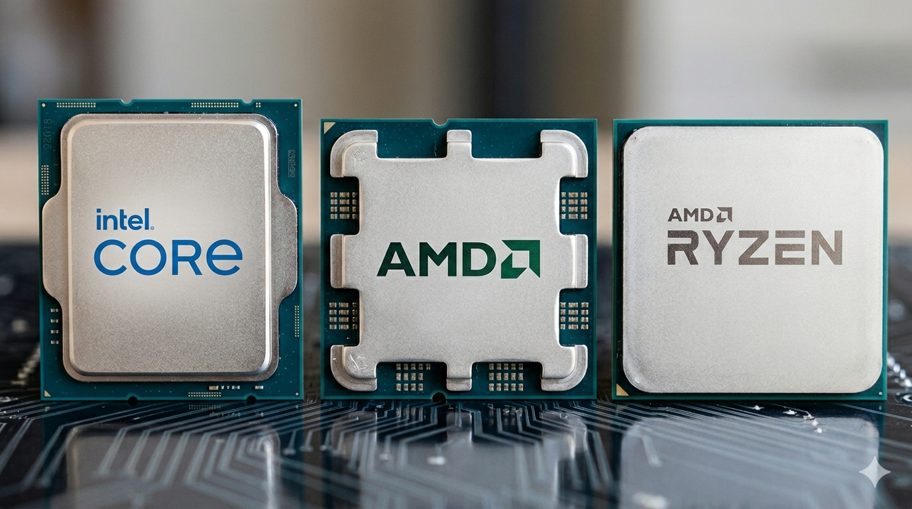
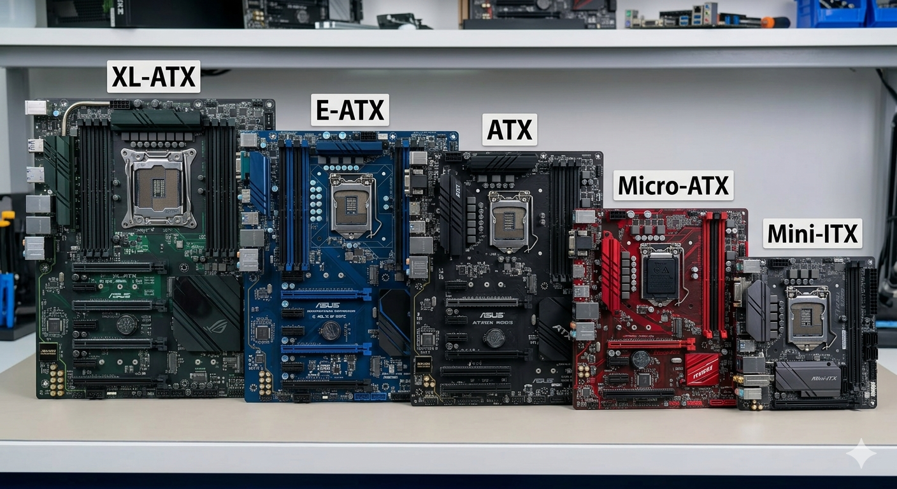
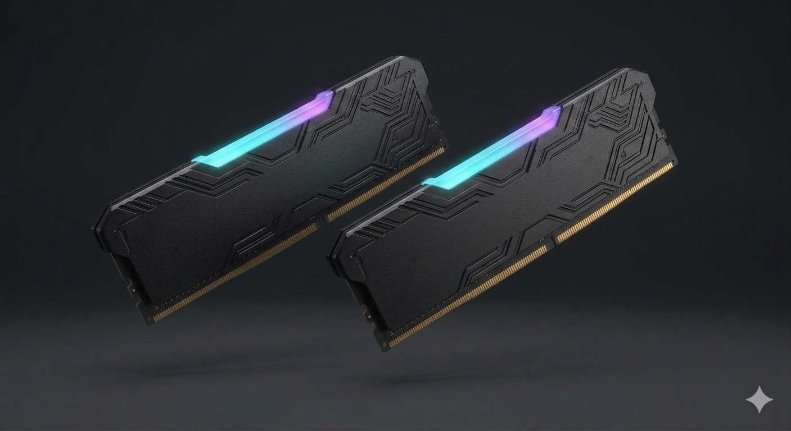
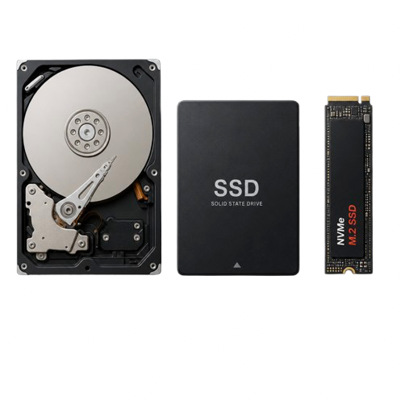
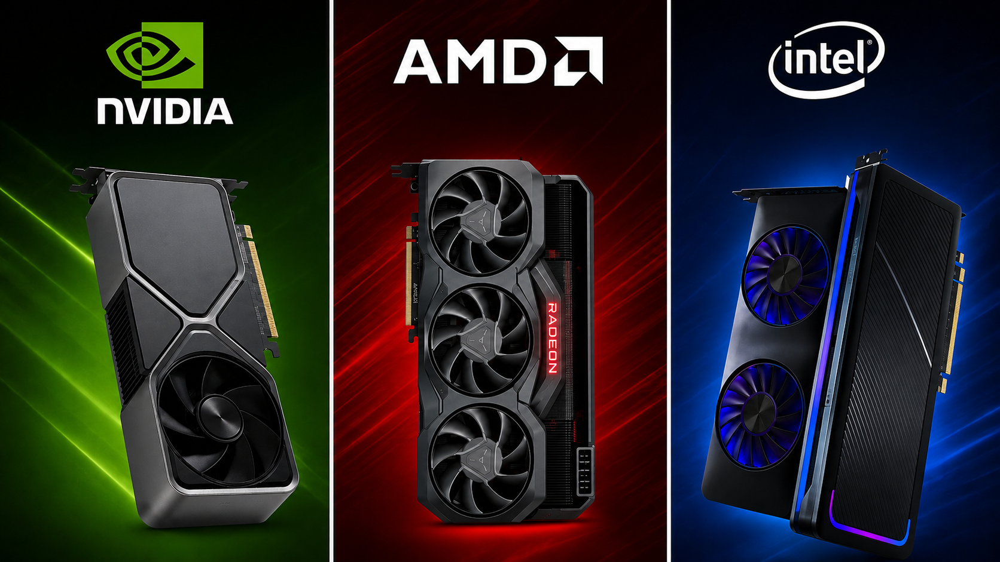
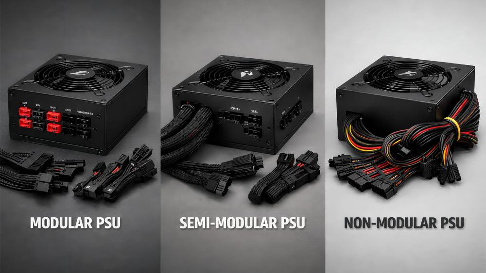

COMPONENTS:
Yes! You are finally ready to build your own custom PC! You have completed all your research and now feel confident enough to get started, way to go!The first crucial step in building your own custom PC is choosing the right components.
These are the main 2 things to look out for when choosing your components:
1. Set a Budget. This can get very expensive very quickly so it is imporant to know your limit of how much you want to spend. (More $ = More Powerful)
2. Ensure your parts are compatible. Not all PC parts will work together, it is imporant to ensure all your parts are compatible with each other before buying them. A useful tool that is very popular is PC PART PICKER (strongly suggest using). It will tell you if your components are compatible as well as tell you where you can buy them and at what prices.
This page will explain each of the parts you need to build your PC as well as their purpose.
Note: All suggested tools (comparisons, lists, etc.) are reliably sourced through community accepted and tested knowledge.


INTEL LGAxxxx (SEVERAL GENERATIONS)
AMD RYZEN AM5
AMD RYZEN AM4
PROCESSOR / CPU (CENTRAL PROCESSING UNIT)
The Central Processing Unit (CPU) is one of the most important components in a PC, alongside the GPU. It is often referred to as the “brain” of the computer because it handles most of the general processing and instructions needed for the system to run.The CPU is responsible for tasks such as running applications, managing background processes, and coordinating how all other components work together. A more powerful CPU allows for faster performance, smoother multitasking, and better overall system responsiveness.
Because of this, it is extremely important to choose the right CPU for your needs and budget, as it has a major impact on how fast and efficient your PC feels during everyday use and demanding tasks.
CPU BRANDS AND MODEL NAMES
The two CPU manufactuers are AMD and Intel. Both produce a wide range of processors for different performance levels and budgets.
CPU model names can help indicate performance. In general, higher numbers and newer generations usually mean better performance. For example:
Intel Core i3 < i5 < i7 < i9
AMD Ryzen 3 < Ryzen 5 < Ryzen 7 < Ryzen 9
Newer generations within each series are also more powerful and efficient than older ones. For example, an Intel Core i5 from a newer generation will often outperform an older Core i7. However, performance can still vary depending on architecture, core count, and clock speed, so it is important to compare CPUs carefully before purchasing.CPU Model Numbers Explained (clarifies performance level of each chip)

CORES AND THREADS
CPUs are made up of cores and threads, which determine how many tasks the CPU can handle at once.
Cores: Physical processing units inside the CPU. More cores allow better multitasking and performance in demanding workloads.
Threads: Virtual paths that help each core handle taks more efficiently.
In general, more cores and threads improve performance in productivity tasks, streaming, and modern games.CLOCK SPEED (GHz)
The CPU's speed is measured in GHz (gigahertz), which represents how many cycles it can perform per second.
A higher clock speed usually means:
- Faster single-task performance
- Better gaming performance
- Improved system responsiveness
However, clock speed alone does not determine overall system performance.COMPATIBILITY
You should base the rest of your system on the CPU. Your other components should be selected to be compatible with the CPU, not the other way around. You should ensure:
- The CPU must match the Motherboard's socket type
- The Motherboard must support the CPU generation
- A compatible cooling solution is required (air or liquid cooler)
- The CPU must be supported by the motherboard BIOS (in some cases)
COOLING
CPUs generate heat and require cooling to function properly. Most CPUs either come with a stock cooler or require a separate air or liquid cooling solution.
A stronger CPU will usually require better cooling to maintain performance and prevent overheating.
TIP: Sometimes, CPUs will include something called Integrated Graphics. That essentially means that they are capable of putting an image on the screen without a dedicated graphics card. But, these graphics are often insufficent for gaming, and a dedicated GPU is recommended.
The CPU plays a major role in overall system performance, especially for multitasking, productivity, and general responsiveness. Choosing the right CPU depends on your budget, the type of tasks you plan to do, and how powerful your GPU is, as both components work closely together.
CPU COOLER & COMPUTER COOLING
The CPU Cooler is responsible for keeping the processor (CPU) at safe temperatures while the computer is running. Since the CPU generates a large amount of heat during tasks like gaming, streaming, or video editing, a cooler is essential to prevent overheating and maintain performance. It works by transferring heat away from the processor using heatsinks, fans, or liquid cooling systems. This is also why proper cooling for your PC (such as additionally purchased case fans) are often necessary to maintain good temperatures and performance.Without proper cooling, the CPU can slow itself down or even shut itself off to avoid damage.
TYPES OF COOLERS:
- Air Cooler: They use a Heatsink & Fan to cool the CPU. Very affordable and common in most builds. Sometimes included with the CPU you may have purchased.
- AIO (All-In-One) Liquid Cooler: They use a Pump, Radiator, and Fans to move heat away from the CPU. They are popular in Gaming PCs because they offer strong cooling and a clean appearance. They are pre-filled with liquid that never has to be refilled and stays in a closed loop that has a very low leak risk.
- Custom Loop Cooling: Custom loop cooling systems are advanced liquid cooling setups that are designed and assembled by the user using separate parts such as pumps, reservoirs, tubing, water blocks, fittings, radiators, and fans. The coolant travels through the loop to absorb heat from components like the CPU and GPU, while the radiators and fans help remove heat from the coolant to keep temperatures low. Unlike AIO coolers, custom loops can cool both the CPU and GPU at the same time while providing excellent temperatures, quieter operation, and a highly customizable appearance with different tubing styles, coolant colors, and lighting effects. Because they are more complex, custom loops are more expensive and require more maintenance (like cleaning and liquid replacement) and installation knowledge than traditional coolers. Some companies also sell custom loop kits that include most of the necessary parts, making it easier for beginners to get started with custom water cooling.
CHOOSING THE RIGHT COOLER:
It is important to choose a cooler that is powerful enough for your CPU. High-performance processors generate more heat and may require larger air coolers or liquid cooling solutions to maintain safe temperatures.
Some CPUs include a stock cooler in the box. If a CPU comes with a cooler, it is generally designed to handle that processor safely at normal settings. However, aftermarket coolers can still provide lower temperatures, quieter operation, and improved performance for demanding workloads.
You should also make sure the cooler:
- Is compatible with your motherboard and CPU socket (PC PART PICKER).
- Fits inside the PC Case (check the case's max CPU Cooler Height and the Height of the Cooler).
- Provides enough Cooling for your Processor (look up online for exact CPU and Cooler models).
THERMAL PASTE: Thermal paste is a heat-conductive compound applied between the CPU and the cooler. Its purpose is to improve heat transfer by filling tiny gaps between the metal surfaces. Thermal paste is required in a PC because without thermal paste, the cooler cannot transfer heat effectively, which can lead to much higher CPU temperatures. Many coolers come with thermal paste, either pre-applied to the heatsink or with a tube in the box. But if it doesn't, it is important that you purchase some before building your PC.




EXAMPLE MOTHERBOARD LAYOUT DIAGRAM. EVERY MOTHERBOARD INSTRUCTION MANUAL WILL HAVE THIS.
THERE WILL ALSO BE A DIAGRAM OF THE I/O PORTS IN THE MANUAL.
MOTHERBOARD LAYOUT AND I/O PORTS VARY BY MOTHERBOARD. ALWAYS REFER TO YOUR SPECIFIC MANUAL.
MOTHERBOARD
The motherboard is the main circuit board of the computer and is responsible for connecting all of the components together. Every major component in the PC, including the CPU, GPU, RAM, storage drives, cooling systems, and power supply, connects to the motherboard in some way.Because the motherboard controls compatibility between many components, choosing the correct motherboard is extremely important when building a PC.
FORM FACTORS (MOTHERBOARD SIZES)
Motherboards come in different sizes, commonly referred to as form factors.
The most common sizes are (from largest to smallest):
- XL-ATX (less common)
- E-ATX
- ATX (widely considered standard)
- Micro-ATX
- Mini-ITX (for Small Form Factor (SFF) PCs)
Larger or more high-end Motherboards usually provide more ports, connections and expansions for higher-end or larger components.However, larger motherboards require larger PC cases for compatibility. You can fit a smaller motherboard into a larger case, but not vice versa. Although it is techinally possible, it may ruin the aesthetics of the computer to some people.
CPU SOCKET COMPATIBILITY
One of the most important things to check is CPU Socket compatibility.
The CPU socket on the Motherboard must match the CPU you plan to use. Different CPU generations and brands use different socket types.
For example:
- AMD CPUs commonly use the AM4 and AM5 sockets
- Intel CPUs use different socket types depending on generation
Even if the socket matches, the motherboard may still require BIOS support for certain CPUs. PC PART PICKER will help with that.RAM COMPATIBILITY
Motherboards also determine:
- What type of RAM is supported (DDR4 or DDR5)
- Maximum supported RAM speed (frequency in MHz)
- Maximum supported RAM capacity (in GB)
- The number of RAM slots available for sticks
Ensure the Motherboard supports the RAM you plan to use. PC PART PICKER will help with that.EXPANSION SLOTS AND CONNECTIVITY
Motherboards include expansion slots and connectors for additional hardware and accessories.
Common Motherboard connections include:
- PCIe slots for GPUs and expansion cards (like WIFI or BLUETOOTH)
- M.2 slots for NVMe SSDs
- SATA ports for HDDs and SATA SSDs
- Fan and ARGB/RGB headers
- USB and front I/O connections
- Front I/O header connections for the PC case's front USB ports, audio jacks, power button, and reset button (and anything else the case may include on the I/O panel)
Different motherboards offer different numbers of ports and features depending on price and size.REAR I/O ports
The rear I/O panel is located on the back of the motherboard and includes ports used to connect external devices.
Common Motherboard ports include:
- USB Ports (different types indicated by colors)
- Ethernet (wired internet is generally more stable and faster compared to wireless)
- Audio Jacks
- Display Outputs (HDMI/DisplayPort/VGA also found on the GPU)
- USB and front I/O connections
- Wi-Fi antenna connections (on supported motherboards. Motherboards that include Wi-Fi typically also include Bluetooth)
More expensive motherboards often include additional ports and features.CHIPSETS
A motherboard chipset acts as the communications hub and traffic controller on your PC, determining what features your computer can support (such as how many USB ports, M.2 storage slots, and PCIe lanes you have) as well as whether you can overclock your components.
The market is split into two major ecosystems: AMD (for Ryzen processors) and Intel (for Core and Core Ultra processors). Motherboards use these different chipsets to determine supported features and capabilities, making them designed for different budgets and use cases.
Higher-end chipsets will generally provide more or higher-end features, such as more USB and storage connections, better overclocking support, more PCIe and expansion slots, etc.
Motherboard chipset letters explained:
(Evidently, the higher the number is after the letter, the higher-end it is)

TIP: If you want your PC to be able to connect to WiFi and Bluetooth, make sure you get a motherboard that includes WiFi (usually marked by "WIFI" or "AC" in the name. Motherboards including WiFi typically also include Bluetooth.) Or, you can also buy the adapters separately.
You can also use Ethernet, which is wired internet, which almost every motherboard supports. But, this does not allow for Bluetooth compatibility.
The motherboard is the foundation of the entire PC and plays a major role in compatibility and expandability. Choosing the right motherboard depends on your CPU, RAM, storage needs, desired features, and overall budget.
RAM (RANDOM ACCESS MEMORY)
RAM, or Random Access Memory, is a type of temporary memory that stores data the computer is actively using. It allows the CPU to quickly access important information needed to run programs, games, and background tasks. Unlike storage drives such as SSDs or HDDs, RAM only stores data while the computer is powered on. When the PC is turned off, the data stored in RAM is cleared.RAM GENERATION, FREQUENCY AND LATENCY:
RAM comes in different speeds and generations, such as DDR4 and DDR5. Motherboards and CPUs only support one specific generation of RAM (Example: A DDR4 Motherboard will only work with DDR4. You can't put a DDR5 stick in a DDR4 slot and vice-versa). PC PART PICKER will help ensure that your RAM, Motherboard and CPU are all compatible.
One of the main specifications of RAM is its frequency, measured in MHz (megahertz). The frequency represents how fast the RAM can transfer data. Higher frequencies can improve performance in games and applications, especially when paired with high-performance CPUs.
For Example:
- DDR4 commonly ranges from around 2400MHz to 4000MHz (Cheaper)
- DDR5 commonly ranges from around 4800MHz and higher (More Expensive)
In general, higher MHz ratings are preferred because they allow the RAM to transfer data faster.CAS Latency (CL):
Another important RAM specification is CAS Latency (CL Rating). This measures how many clock cycles it takes for the RAM to respond to a request from the CPU. Lower latency = faster response times.
COMPATIBILITY:
- The Motherboard and CPU support the RAM speed and generation. (PC PART PICKER)
- Install RAM in the correct slots for dual-channel performance (usually slots A2 and B2. Slots labeled on the motherboard. Refer to your motherboard manual.)
In short, the ideal RAM kit has lower latency and higher frequency. But, it usually isn't worth spending extra money to get these things as the difference is usually minimal.
IMPORTANT: RAM is temporary memory, not permanent storage. Files and games are stored on drives like SSDs and HDDs, not in RAM.

HDD (HARD DISK DRIVE)
SSD (SOLID STATE DRIVE)
M.2 SSD

STORAGE
Storage devices are used to permanently store your operating system, applications, games, files, and other data on your computer. Unlike RAM, storage keeps data saved even when the PC is powered off.The speed and type of storage you choose can have a major impact on boot times, game loading times, file transfers, and overall system responsiveness.
A helpful tool to help you choose the right storage drive is the SSD TIER LIST.
HDD vs SSD
There are two main types of storage devices used in modern PCs:
- Hard Drive Disk (HDD)
HDDs use spinning disks to store data. They are slower than SSDs but are usually cheaper and available in very large capacities.
HDDs are commonly used for:
- Large file storage
- Photos and Videos
- Backups
- Budget Builds
- Solid State Drive (SSD)
SSDs use flash memory instead of moving parts, making them significantly faster, quieter, and more reliable than HDDs.
SSDs provide:
- Faster boot times
- Faster game and application loading
- Less noise and heat
- Better overall system responsiveness
For modern PCs, SSDs are highly recommended as the main storage drive.
SATA vs NVMe / M.2 SSDs
SSDs are available in different connection types and speeds.
- SATA SSD
SATA SSDs are much faster than HDDs and are commonly connected using SATA cables.
- NVMe / M.2 SSD
NVMe SSDs use the Motherboard's M.2 slot and are significantly faster than SATA SSDs. These drives are commonly used in modern gaming and productivity PCs because of their speed and compact size. They look like a stick of gum. They come in different types and sizes (Type: SATA/NVMe, Size: 22xx) so it is important to make sure the motherboard supports the one you want to use.
In general: HDD < SATA SSD < NVMe SSDSATA vs NVMe / M.2 SSDs
Storage capacity is measured in GB (gigabytes) and TB (terabytes). 1,000 GB = 1 TB.
Larger capacities allow you to store more games, applications, and files. Modern games can take up a large amount of storage space, so choosing enough capacity is important.
COMPATIBILITY:
Before choosing storage, make sure:
- The Motherboard supports the Storage type you want to use
- The case has mounting locations for HDDs or SATA SSDs (if needed)
- Enough SATA ports or M.2 slots are available on the Motherboard
Storage plays an important role in the speed and responsiveness of your PC. Most modern systems use an SSD for the operating system and important applications, while larger HDDs are often used for additional file storage and backups. You can also mix and match the storage types. This way, you can have a well-balanced PC for speed and for large storage capacity.
GRAPHICS CARD / VIDEO CARD / GPU (GRAPHICS PROCESSING UNIT)
The Graphics Card (GPU) is one of the most important components in a PC, alongside the CPU. Together, these two parts have the greatest impact on overall system performance, especially in gaming, video editing, and other graphics-heavy tasks.The GPU is responsible for rendering images, videos, and 3D graphics that appear on your screen. A more powerful GPU allows for higher frame rates, better visual quality, and improved performance in demanding applications.
Because of this, it is extremely important to choose the right GPU for your needs and budget, as it plays a major role in determining how well your PC performs.
The GPU COMPARISON CHART shows the performance level of all graphics cards and compares them to others. This is a very useful tool for choosing the right GPU.
VIDEO MEMORY (VRAM)
The GPU includes its own memory called VRAM (Video RAM). This memory stores textures, models, and other graphical data while the GPU is working. It has the same function as regular RAM in a PC, but it is used for different tasks by the GPU.
More VRAM is useful for:
- Higher resolution gaming (1440p and 4K)
- High-quality textures
- Modded games and demanding creative workloads
However, VRAM alone does not determine overall GPU performance, as the GPU's architechture and overall power are equally important.GPU Model Names and Performance
GPU model names can help indicate overall performance level. In general, higher model numbers usually mean better performance.
There are 3 main GPU Manufactuers:
- Nvidia offers high-end AI frame generation, RayTracing and DLSS Upscaling which significantly improves gaming experiences and heavy tasks. However, they are typically more expensive.
- AMD offers more fairly priced cards for raw performance.
- Intel is far less common, but they are starting to jump into the GPU industry instead of just CPUs. Their lineup of GPUs can be something to consider if priced well.
Newer generations are also usually more powerful and efficient than older ones. For example, an RTX 4070 is part of a newer generation compared to an RTX 3070. Newer GPUs are also compatible with the newest softwares, systems and drivers for adaptability to modern games.
However, performance can still vary between generations and models, so it is important to research and compare GPUs before purchasing.
GPU Model Numbers Explained (clarifies performance level of each card)

COMPATIBILITY
Before choosing a GPU, it is important to make sure it is compatible with your system:
- The case has enough physical space (GPU length and thickness)
- The power supply has enough wattage and the correct power connectors
- The motherboard has a PCIe slot (standard on modern motherboards)
It is also important to pair the GPU properly with the CPU. A very powerful GPU paired with a weak CPU (or vice versa) can create a bottleneck, where one component limits the performance of the other. A helpful tool to check this is the Bottleneck Calculator.COOLING AND POWER
More powerful GPUs produce more heat and consume more power. Because of this, higher-end graphics cards often use larger cooling systems with multiple fans and require stronger power supplies. This also requires sufficient case cooling.
Some GPUs may also have RGB lighting and larger designs for improved cooling and aesthetics.
GPU SAG (IMPORTANT)
Some larger GPUs may sag or bend slightly due to their weight. All GPUs carry this risk, however it is significantly more obvious with larger cards. Excessive sag can place stress on the motherboard and damage the slot or the GPU over time.
To prevent this, GPU anti-sag brackets exist (sometimes included with GPUs) and are definetly recommended. They aren't too expensive either, so why not?
The GPU has the biggest impact on gaming performance and visual quality, making it one of the most important parts to choose correctly. The best GPU depends on your budget, the games or applications you plan to use, and the overall performance level you want from your PC.



Notice how the space inside the cases gets smaller and smaller from left to right (biggest to smallest)

Airflow Direction
COMPUTER CASE
The PC case is the enclosure that holds and protects all of the computer’s components. It provides mounting locations for hardware such as the motherboard, graphics card, storage drives, cooling systems, and power supply while also helping manage airflow and cable organization.Cases come in many different sizes, styles, and designs, allowing users to choose one that fits both their hardware needs and personal appearance preferences.
CASE SIZE
PC Cases are available in several sizes, commonly referred to as form factors. The size of the case determines what hardware can fit inside.
- Full Tower: Large Cases with maximum space for components, cooling and expansion.
- Mid Tower: The most common case size. Doesn't take up a lot of room on floor/desk while still offering a balance between size, airflow and compatibility.
- Mini Tower / Small Form Factor (SFF): Compact and small cases that take up minimal room and can sometimes be portable. Designed for smaller builds, which are typically much more challenging to do and find compatible components for.
Tip: Although you techincally can put a smaller motherboard into a larger case, it might look weird due to the extra, unoccupied space that could have been used by a larger motherboard. This is really just an aesthetic choice and is completely up to you.
COMPATIBILITY:
It is important to make sure the case supports:
- Motherboard Size (Largest to Smallest: XL-ATX, E-ATX, ATX, Micro-ATX, Mini-ITX)
- Larger cases will support smaller motherboards (ex: a Micro-ATX motherboard will fit into an ATX case) but not vice versa.
- CPU Cooler Height
- GPU Length
- PSU Length
- Drive Mounting Support (if using an HDD or non-M.2 SSD)
- Front I/O Panel (where all the USBs and ports are on the case) Connections to Motherboard
- Radiator and Fan Support:
- Cases also support different fan and radiator sizes. Common fan sizes include 120mm and 140mm, while common radiator sizes include 120mm, 240mm, 280mm, and 360mm. It is important to ensure the case has enough mounting space for your cooling setup.
- Good airflow is essential for performance. A typical setup includes intake fans bringing cool air into the case and exhaust fans removing hot air. Most cases include at least the minimum number of fans required, but adding extra fans can improve cooling and system appearance.
- Fan Airflow Direction: PC case fans move air from the open side toward the side with the sticker and support arms. Reverse blade fans do the opposite, allowing airflow while keeping the visually appealing side of the fan facing inward, which is useful for clean showcase builds.
- Make sure your motherboard and power supply have enough headers, ports, or controllers to support all your fans and RGB devices.
In short, you want to choose a PC case that fits all your components comfortably while also matching the look and style you want for your build.
PSU (POWER SUPPLY UNIT)
The Power Supply Unit (PSU) acts as the computer's heart, converting Alternating Current (AC) from the wall into Direct Current (DC) while protecting the components from electrical damage.BEFORE BUYING A PSU, YOU SHOULD LOOK OUT FOR:
- Wattage: Calculate the system's estimated wattage using a tool like PC PART PICKER and choose a PSU providing at least 20%-30% higher wattage than the calculated estimate to be safe.
- Size: Match the unit with the PC Case's size (Standard ATX for standard and SFX for small form factor).
- Cable Quantity: Ensure the unit includes enough cables for everything you need.
- Efficiency Rating (80+): Measures how much electricity is successfully converted rather than wasted as heat (ranging from Base to Titanium), higher ratings run cooler and lower electricity bills.
- PSU Tier List: After research and testing, the community agrees that aiming for at least Tier C (acceptable for mid-range builds) or Tier D (recommended only for basic budget builds) is the best choice to avoid hazardous Tier E/F units. They are ranked on the PSU Tier List
- Modularity Types: Choose how cables attach to the unit.
- Full Modular: Typically most expensive. All cables detach from the unit to avoid clutter.
- Semi Modular: Essential cables (like the motherboard 24-pin, CPU 4+4pin, etc.) are permanently
attached, while peripheral cables are detachable.
- Non Modular: All cables are permanently attached to the unit and don't come off, whether used
or not. Typically are the most affordable but extra, unused cables must be tucked away.


O.S. (OPERATING SYSTEM)
The Operating System (OS) acts as the vital software foundation that transforms a collection of hardware components into a functional computer by serving as the master intermediary between the user and the machine's physical circuitry. It functions as an invisible conductor, managing the "input" from your mouse or keyboard and translating it into machine code that the CPU can execute, while simultaneously coordinating how the GPU renders images and how the SSD stores your files. Beyond mere translation, the OS is responsible for resource allocation, ensuring that multiple applications can run smoothly without crashing by dictating exactly how much memory and processing power each task receives at any given microsecond.Selecting the right OS involves balancing these core functions with specific platform features.
- Linux offers a free-of-cost, open-source playground for those who want total system transparency and customization. But, there are thousands if not millions of different verisons and complex ideologies that come from Linux making it a less-good choice for normal users.
- Most users opt for Windows due to its vast library of drivers and gaming optimizations. Navigating the Windows ecosystem requires choosing between Windows 10, which remains a stable and familiar choice for older hardware, and Windows 11, which is specifically engineered with advanced scheduling to maximize the performance of the latest multi-core processors. Within these versions, the Home edition is the standard for gamers and everyday users, providing all essential features like "Auto HDR" and DirectX 12 support, whereas the Pro edition adds professional-grade layers such as BitLocker disk encryption, Remote Desktop capabilities, and specialized virtualization tools for those running complex local networks or sensitive data environments. Although you can download Windows on a PC for free using an Installation Media USB Drive, activating the license does require a payed Activation Key (either from authorized retailers or legit third-party sellers. Click here for a comparison of different activation methods.) to unlock the full experience. But, most users say that it works fine without activation.
In short: Choose Windows for an easy, user-friendly experience tailored to advanced gaming, mainstream productivity, and general use. Choose Linux if you want a highly customizable, secure, and resource-efficient environment optimized for programming and server management.